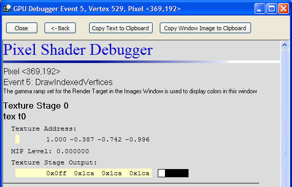

The PIX Pixel Shader Debugger shows a complete breakdown of the pixel shader used in the rendering of a selected pixel. The debugger shows the inputs and outputs for the texture stages, combiner stages, and the final combiner stage. At the bottom of the window, the debugger lists the vertex data for the primitive used in the rendering of the pixel. By clicking on the index of the vertex, the user will launch the PIX Vertex Shader Debugger on that vertex.
